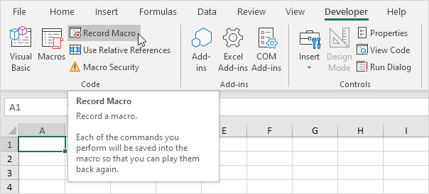
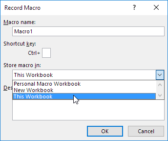
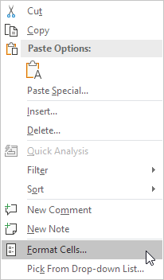
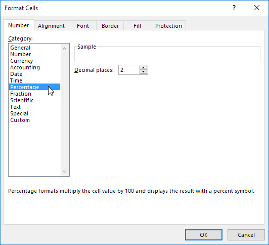
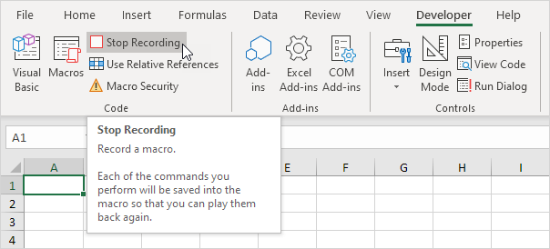
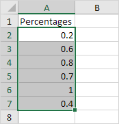
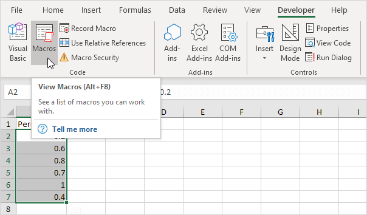
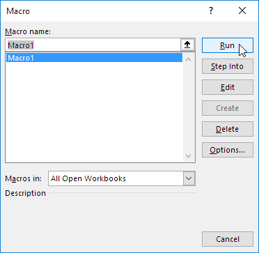
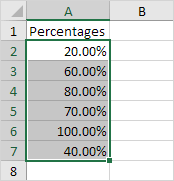
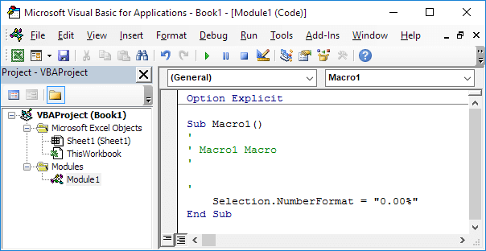

Macro Recorder
Record a Macro | Run a Recorded Macro | See the Macro
The Macro Recorder, a very useful tool included in Excel VBA, records every task you perform with Excel. All you have to do is record a specific task once. Next, you can execute the task over and over with the click of a button. The Macro Recorder is also a great help when you don't know how to program a specific task in Excel VBA. Simply open the Visual Basic Editor after recording the task to see how it can be programmed.
Unfortunately, there are a lot of things you cannot do with the Macro Recorder. For example, you cannot loop through a range of data with the Macro Recorder. Moreover, the Macro Recorder uses a lot more code than is required, which can slow your process down.
Record a Macro
1. On the Developer tab, click Record Macro.

2. Enter a name.
3. Select This Workbook from the drop-down list. As a result, the macro will only be available in the current workbook.

Note: if you store your macro in Personal Macro Workbook, the macro will be available to all your workbooks (Excel files). This is possible because Excel stores your macro in a hidden workbook that opens automatically when Excel starts. If you store your macro in New Workbook, the macro will only be available in an automatically new opened workbook.
4. Click OK.
5. Right mouse click on the active cell (selected cell). Be sure not to select any other cell! Next, click Format Cells.

6. Select Percentage.

7. Click OK.
8. Finally, click Stop Recording.

Congratulations. You've just recorded a macro with the Macro Recorder!
Run a Recorded Macro
Now we'll test the macro to see if it can change the number format to Percentage.
1. Enter some numbers between 0 and 1.
2. Select the numbers.

3. On the Developer tab, click Macros.

4. Click Run.

Result:

See the Macro
To take a look at the macro, open the Visual Basic Editor.

Note: the macro has been placed into a module called Module1. Code placed into a module is available to the whole workbook. That means you change the number format of cells on other sheets as well. Remember, code placed on a sheet (assigned to a command button) is only available for that particular sheet. You can ignore the Option Explicit statement for now.